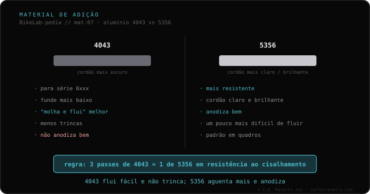

Para soldar alumínio se usa um de dois metais de adição. O 4043 é pensado para a série 6xxx: funde a uma temperatura menor, flui e "molha" melhor, trinca menos com o 6061 e deixa um cordão mais escuro, mas não anodiza bem. O 5356 é mais resistente, deixa um cordão mais claro e brilhante, anodiza corretamente e é o arame mais usado em MIG. Regra prática de oficina: são necessários ~3 passes de 4043 para igualar ao corte um único de 5356.
Ao soldar alumínio, não importa só a técnica: importa com o que se preenche. E a escolha entre esses dois metais de adição deixa marca na resistência e no acabamento.
O 4043 (família 4xxx) é pensado para as ligas da série 6xxx, como o 6061. Funde a uma temperatura menor e, por isso, flui e "molha" melhor o metal: preenche com mais facilidade. É menos propenso a trincar com o 6061, o que o torna confortável e seguro em muitas juntas. O preço: deixa um cordão mais escuro e não anodiza bem —a cor não pega de forma uniforme—.
O 5356 (família 5xxx) é mais resistente. Deixa um cordão mais claro e brilhante e, ao contrário do 4043, anodiza corretamente, o que importa quando o quadro vai levar acabamento anodizado. É o arame mais usado em MIG. Em troca, é um pouco mais difícil de fazer fluir. A diferença de resistência se resume em uma regra de oficina: são necessários cerca de três passes de 4043 para igualar ao corte (cisalhamento) um único de 5356.

O metal de adição é a peça que fecha o processo de soldar alumínio. Por isso conecta com a liga do quadro —o 4043 é pensado para a série 6xxx— e com a técnica empregada, já que o 5356 é o arame mais usado em MIG. Saber com que metal de adição se vai soldar é, além disso, uma das perguntas úteis a fazer ao soldador.
Se você quer entender que metal de adição corresponde ao seu caso antes de decidir nada, mande o caso. Damos o idioma, sem te vender nada. Fale conosco no WhatsApp
O 4043 é pensado para a série 6xxx: funde a uma temperatura menor, flui e molha melhor e trinca menos com o 6061, mas deixa um cordão mais escuro e não anodiza bem. O 5356 é mais resistente, deixa um cordão mais claro e brilhante, anodiza corretamente e é o arame mais usado em MIG.
O 5356 é mais resistente. Uma regra prática de oficina resume: são necessários cerca de três passes de 4043 para igualar ao corte (cisalhamento) um único passe de 5356.
Porque se o quadro vai ser anodizado, o 4043 deixa um cordão que não pega bem a cor, enquanto o 5356 anodiza corretamente. É um dos motivos pelos quais o 5356 é o arame mais usado em MIG de alumínio.